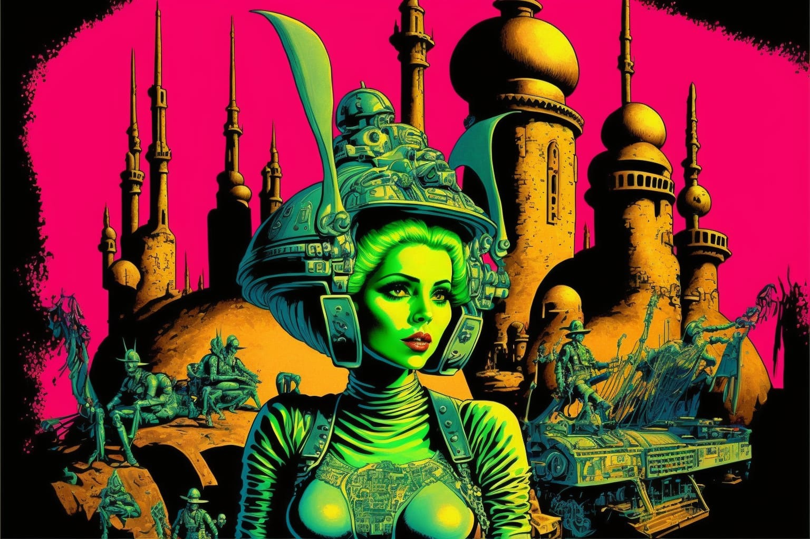

Référencement

Logiciels sources image et son
- Logic Pro X 2
- Blender
- Kling
- Chatgpt
- Illustrator
- Photoshop
Sources encyclopédiques
Wikipédia
Sources d'inspiration narrative
- Issac Asimov (« Terre et fondation », « Les Dieux eux-même »,...)
- Philip K. Dick (...)
- Umberto Eco (« Le pendule de Foucault »)
- Serge Brussolo (« Planète ouragan », « Le bleu du ciel », ...)
- Mark Z. Danielewski (« La maison des feuilles »)
- Dan Simmons (« Hyperion », « L'échiquier du mal »)
- Alain Damasio (« La horde du contrevent »)
- Bernard Webber (« Les fourmis »)
- Friedrich Nietzsche (« Ainsi parait Zarathoustra »)
- Paulo Cohelo (« L'achimiste »)
- Voltaire (« Candide », « Zadig et Voltaire »)
- Alejandro Jorodowsky (« L'incal »)
- Mélissa Da Costa (« Tout le bleu du ciel »)
- Stephan Zweig («Le joueur d'échec »)
Sources d'inspiration musicale
- J.S. Bach
- Jimi Hendrix
- Pink Floyd
- Bjork
- Mars Volta
- Incubus
- Goro Yamagushi
- Zaiko langa langa
- Radiohead
- Animal’s as leader